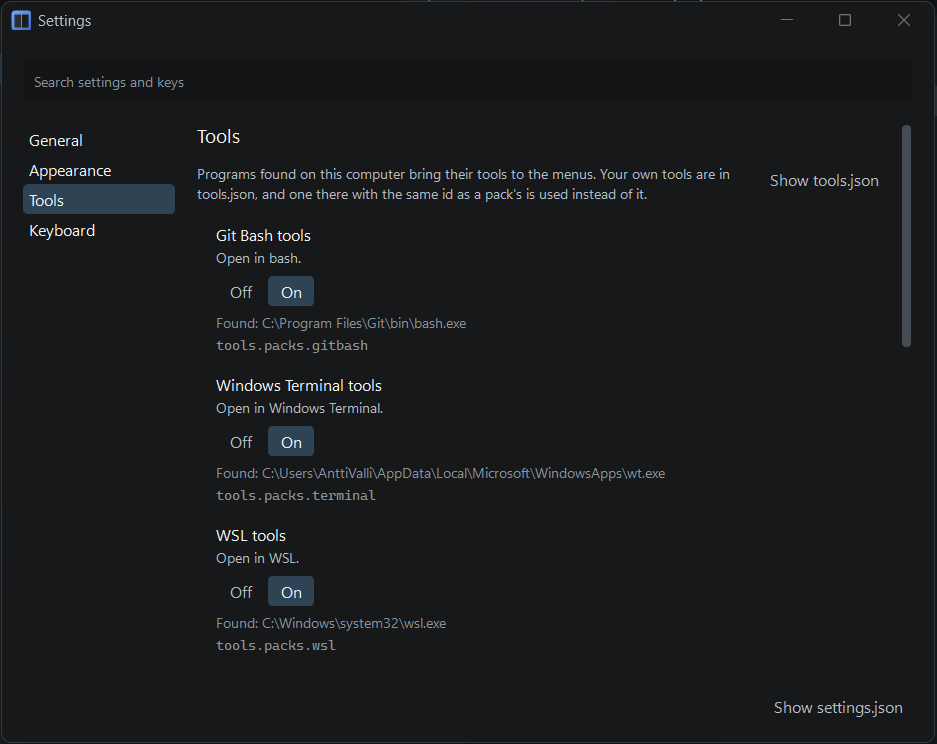
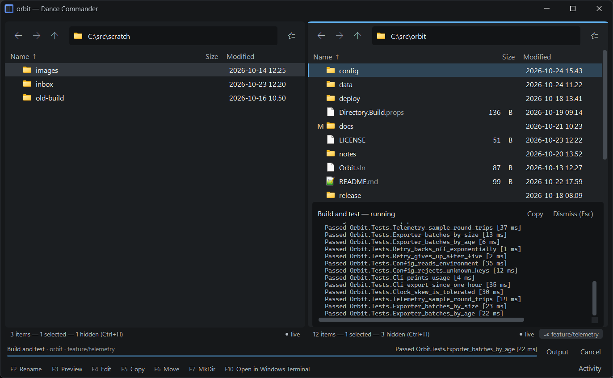
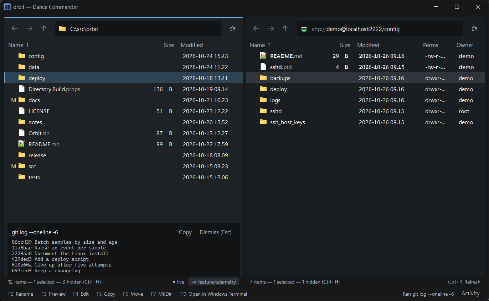
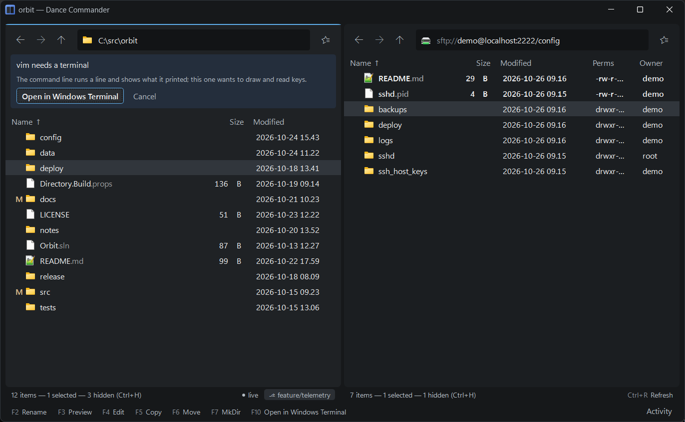

Tools and the command line
Dance Commander has no plugins. It runs programs you already have. Some of them bring tools of
their own as soon as they are found on your computer; the rest you describe in one file you own:
%APPDATA%\DanceCommander\tools.json. A tool appears in the right-click menu, the
command palette, and on a key if it has one, exactly as a built-in command does.
Tools that come with your programs
Dance Commander looks for a few programs and, for each one it finds, offers its tools. It only looks; it never runs what it finds to find out.
| Program | Tools |
|---|---|
| Git Bash | Open in bash (Ctrl+Shift+B) |
| Windows Terminal | Open in Windows Terminal |
| WSL, with a Linux installed | Open in WSL |
| VS Code | Open with VS Code, Open folder in VS Code, Open repository in VS Code |
| Beyond Compare | Compare in Beyond Compare (two or three marked rows; three is a three-way view), Compare with the other pane (the same name there), Compare folders (the two panes), Git diff in Beyond Compare and Git diff for this (against HEAD), Resolve conflicts and Resolve this conflict (only while git reports one) |
| Fork | Open repository in Fork |
| GitKraken | Open repository in GitKraken |
| Windows | SHA-256 of the marked files |
When a program is found for the first time, the pane says which tools have arrived. Each set
can be switched off in Settings (Ctrl+,), under Tools,
which also says when a program isn't on this computer. In settings.json that is
"tools": { "packs": { "beyondcompare": false } }.
To change one of these tools, give a tool in tools.json the same id:
yours is used instead. With "enabled": false it simply hides that one. The ids are
open-in-bash, open-in-terminal, open-in-wsl,
vscode, vscode-folder, vscode-repository,
bc-compare, bc-compare-other-pane, bc-compare-folders,
bc-git-diff, bc-git-diff-file, bc-git-merge,
bc-git-merge-file, fork, gitkraken and
sha256.

A tool of your own
{
"tools": [
{
"id": "open-in-pwsh",
"title": "Open in PowerShell",
"group": "Terminal",
"exec": "pwsh",
"args": ["-NoExit"],
"workingDirectory": "${dir}",
"launch": "console",
"keybinding": "Ctrl+Shift+K"
},
{
"id": "md5",
"title": "MD5",
"group": "Inspect",
"appliesTo": "file|multi",
"exec": "certutil",
"args": ["-hashfile", "${path}", "MD5"],
"launch": "capture",
"forEachSelected": true,
"when": { "filesOnly": true }
}
]
}Save the file and the change is live. Comments are allowed. If it doesn't parse, the pane says
so with the line and column, and the last good version stays in use. Dance Commander writes
tools.json only when there is none, with one example in it, turned off; it never
overwrites your file.
Fields
id, title | Required. The id must be unique; the title is what menus show |
group | Groups tools in the menu and the palette |
exec | The program. A bare name like code is looked for on the PATH, then in App Paths, where Windows finds programs such as winword. Never in the folder you are browsing; give a full path for anything else |
args | A list of arguments, with placeholders |
workingDirectory | Where it runs. Default: the folder the pane shows |
launch | How it runs: see launch kinds. Default process |
keybinding | A key, such as Ctrl+Shift+K. Takes over a built-in command's key if they clash |
appliesTo | Any of file, directory, background, multi, joined with | |
when | A condition on the selected entries, written like a highlight rule's match: { "glob": "*.{cs,md}" }, { "extensions": ["zip", "7z"] }, { "filesOnly": true, "minSize": "100MB" } |
maxSelected | The most rows it takes at once. With 3, it leaves the menu when four are marked |
schemes | Which kinds of place it works in. Default: local files only. A tool that uses ${otherPaneDir} also needs the other pane on screen and showing such a place |
inRepository | Offer it only inside a git repository |
remoteMatches | Offer it only in repositories whose remote URL matches, e.g. "*/orbit.git". A bare word means “contains” |
inConflict | Offer it only where git reports a merge conflict: on the conflicted files and the folders holding them, or, for a tool about the folder, anywhere in a repository that has one |
forEachSelected | Run once per selected item rather than once for all |
outputDirectory | For a job: where its result lands. Success offers to open it in the other pane |
outputEncoding | For capture and job: how the program writes its output, e.g. "utf-8". Unset, it is read in the console's code page, which suits cmd.exe but not git or anything from the Unix side |
edits | true lets it take F4 for the files its when matches. See F4 |
subject | selection or location. Usually worked out for you, see below |
enabled | false keeps it out of the menus without deleting it |
About the selection, or about the folder?
A tool that only uses ${dir}, ${otherPaneDir}, the repository tokens
or ${env:…} is about the folder: it appears in the folder's menu
(the location chip, Ctrl+., right-click on empty space). One that uses
${path}, ${name}, ${selection} and the like is about
the selection and appears on rows. Set subject to override.
Placeholders
| Placeholder | Becomes |
|---|---|
${path} | The full path of the row under the cursor |
${selection} | Every selected path, each as its own argument |
${name}, ${stem}, ${ext} | report.final.pdf, report.final, .pdf |
${dir} | The folder the pane shows |
${otherPaneDir} | The folder the other pane shows |
${uri} | The row's full address, for places that have no Windows path |
${repoRoot}, ${branch}, ${remoteUrl} | The repository you are in, from anywhere inside it. ${branch} has no value when HEAD is detached |
${env:NAME} | An environment variable |
${prompt:Label} | Asks you, inline, before running |
${repoRoot|lowerDrive} | A filter: the drive letter in lower case (c:\work\orbit), the spelling dev containers use |
Arguments are passed as a list, never pasted into a command string, so a file
name containing a space, a quote or an & reaches the program intact. If a
repository placeholder has no value here (not in a repository, HEAD detached, no remote), the tool
isn't offered at all, rather than running with an empty argument.
.cmd or .bat target re-reads its arguments by cmd's
own rules, so for those an argument containing & | < > ^ % " is refused with
a notice instead of passed on. VS Code's code is one; point exec at
Code.exe to avoid it.Launch kinds
process | Start it through Windows, as a double-click would. For GUI programs |
console | Start it in its own console window. For terminals and shells, and for programs that ask questions |
capture | Run it, wait, and show what it printed in the pane's output panel |
job | Run it in the background: output streams into the pane, the strip at the bottom shows it running with a Cancel button, and it tells you when it's done |
Jobs
A job is for something that takes a while: a build, a test run, a deploy.
{
"id": "devcontainer-build",
"title": "Build in devcontainer",
"group": "Build",
"exec": "devcontainer",
"args": ["exec", "--workspace-folder", "${repoRoot}", "make"],
"workingDirectory": "${repoRoot}",
"outputDirectory": "${repoRoot}/build",
"launch": "job"
}This one is in the first tools.json, turned off: what “build” means is your
project's business.
- The output panel follows the job live and keeps the last 4,000 lines. Closing the panel doesn't stop the job; the strip's Output button brings it back.
- Cancel ends the program and everything it started.
- If it fails, the strip shows the exit code and the program's own last words, with Copy error beside them.
- If it succeeds and has an
outputDirectory, the strip offers Open output folder, in the other pane. - If the window isn't in front when it finishes, the taskbar button flashes and Windows shows a notification.
- Closing the window while a job runs asks first: Keep open, Close when finished or Cancel and close. While jobs run, Windows doesn't go to sleep on its own, and shutting down names what is still running.

F4: edit, never run
F4 opens a file to change it. Text goes to whatever opens your .txt
files, and anything else to Windows' own “Edit” (Paint for an image). It never runs the file, so
it's the safe key on a script you don't trust.
A tool with "edits": true takes F4 for the files its when
matches, ahead of both. The first such tool that applies wins, in file order.
{
"id": "edit-in-code",
"title": "Edit in VS Code",
"group": "Edit",
"appliesTo": "file|multi",
"exec": "C:/Users/me/AppData/Local/Programs/Microsoft VS Code/Code.exe",
"args": ["${selection}"],
"edits": true,
"when": { "glob": "*.{html,py}" }
}Its args must name the file (${path} or ${selection}),
and its exec can't be the file itself; a tool that breaks either rule is not used for
F4, and the log says why.
The command line: Ctrl+E
Ctrl+E opens a line at the bottom of the pane. Enter runs it in the folder you are looking at.
- Locally it runs in Git Bash if it's installed, and in
cmd.exeotherwise. The shell is named in grey at the prompt, because the same line means different things in each.commandLine.shellinsettings.jsonchooses:"auto","bash","pwsh"or"cmd". The line reaches the shell exactly as typed, so quotes,&&, pipes and redirection mean what they mean there:git commit -m "fix the parser". - On an SFTP server it runs on the server, over SSH, in that folder, in the account's own shell (asked once per account). Servers whose shell isn't a POSIX one, such as a Windows server's, aren't supported yet.
- Placeholders work here too, and are quoted for the shell they are going to:
git log --oneline -- ${selection}. - Not inside an archive, or anywhere else without a folder on this machine.
What comes back
- A line that succeeds and prints nothing says so in passing,
✓ touch notes.md, and fades. Nothing to dismiss. - Output opens just above the line, at the foot of the pane, with Copy and Esc to close it. A line that fails says so, with its exit code. Colour codes programs print are taken out.
- A line still running after 3 seconds moves to the job strip, where its output streams, it can
be cancelled, and it says when it's done. End a line with
&to send it there at once. - Every line is a new process that starts in the pane's folder, so a
cdlasts only for the rest of its own line. Acdon its own says so instead of running; Ctrl+L is the way to go somewhere.
Up and Down bring back earlier lines. There is one history per shell, and
one per server account, since a line written for one rarely means anything to another. They are
kept between sessions, the last 300 lines of each. A line with a ${prompt:…} is kept
as typed, never with your answer in it.

A real terminal, one step away
The command line runs a line and shows what it printed; it is not a terminal. When you need one:
- Ctrl+Shift+B opens a shell where you are: Git Bash in a local
folder (when it's installed), and on an SFTP server, Windows Terminal with
sshalready in the pane's folder (Open a shell on the server). That is Windows' own ssh and a second login: a key or an agent makes it invisible, otherwise you type the password there. It keeps its own list of known hosts, so it may ask about the server's key once more. - A line that starts a program wanting a terminal of its own (
vim,nano,less,top,ssh, a barepythonornode, and the like) isn't run in the pane. The pane offers to open it in Windows Terminal instead, in the same folder, locally or on the server.
sudo's password, has nowhere
to ask on the command line. Run it in a terminal.
Running a script: Shift+Enter
Enter opens a file the way Explorer would: a .bat flashes a console
that closes before you can read it, and a .ps1 opens in Notepad.
Shift+Enter runs the file under the cursor through the command line instead,
so its output stays in the pane and Up brings the line back to run it again:
.exe, .com, .bat, .cmd | Run as they are: ./setup.exe |
.ps1 | PowerShell 7 if you have it, else Windows PowerShell, with -NoProfile -File. The execution policy is left as it is |
.py | The py launcher if you have it, else python |
.sh | Git Bash |
The line names the interpreter by its full path, found on the PATH, so a
py.cmd lying beside the script can't stand in for Python.
Run with arguments… (palette or right-click) puts the same line on the command
line for you to finish. A file Windows marked as downloaded from the internet is asked about
first. A file whose path holds characters a shell would read as commands or placeholders isn't
put on a line at all; the pane says so, and you can type the line yourself.